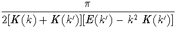

Previously I had written up some notes where I calculated the equivalent resistance of a rectangular cross section conductor by dividing the surface up into segments, using a piecewise constant charge distribution over each segment, and solving for the charge distribution that gives an equipotential on the surface. I then calculated an equivalent diameter for the r.f. resistance of this conductor. It is also easy to calculate the equivalent diameter of a circular cross section conductor that gives the same capacitance per unit length. Since the capacitance is calculated as the ratio of the total charge to the potential difference. This equivalent diameter is the one used in replacing the rectangular cross section element with a circular cross section one for perfectly conducting approximation in antenna codes, while the resistive diameter can be used to evaluate the resistive loss terms.
Y.T. Lo, ``A note on the cylindrical antenna of noncircular cross section,'' J. App. Phys. 24, 1338 (1953), solved for the self impedance equivalent diameter of regular polygon cross section conductors. Here I extend his analysis to rectangular cross section conductors. I calculate both the equivalent self impedance diameter and the equivalent r.f. resistance diameter.
Lo used the conformal mapping from the u to z planes given by
| dz = (u - ai)u - 2du, | (1) |
|
dz = [u 2e - i + u - 2e i | (2) |
|
dz = [2cos(2 | (3) |
Choosing  less than or equal to
less than or equal to  /2 , the lengths of the
two sides of the rectangle corresponding to the unit circle are
/2 , the lengths of the
two sides of the rectangle corresponding to the unit circle are
| s1 | = |
 | |
| = |
| ||
| s2 | = |
| |
| = |
| (4) |
|
sin( - | (5) |
| s1 | = | 4[E(k) - k'2 K(k)] | |
| s2 | = | 4[E(k') - k 2 K(k')] | (6) |
| K(k) | = |
| |
| E(k) | = |
d | (7) |
The effective self impedance diameter for this size rectangle is two. The effective self impedance diameter of a rectangular cross section conductor of width w and thickness t is given by
| dself = = w | (8) |
| = | (9) |
The charge density can be obtained similarly. The charge density is
proportional to the perpendicular electric field. The equipotentials
for the u system are circles, so we can calculate other equipotentials
by choosing  > 1 . We can take the normal derivative of the
potential to get the perpendicular electric field. You can think of
this as evaluating the distance h that a nearby equipotential is
from the rectangle. The derivative of the potential is then just
the difference in the potentials divided by this distance. Taking
the derivative with respect to
> 1 . We can take the normal derivative of the
potential to get the perpendicular electric field. You can think of
this as evaluating the distance h that a nearby equipotential is
from the rectangle. The derivative of the potential is then just
the difference in the potentials divided by this distance. Taking
the derivative with respect to  and calculating this distance
gives
and calculating this distance
gives
|
E( | = | -1 | |
| = |
2- |cos(2 | (10) |
Normalizing this to 1, we get the normalized charge density to be
|
| (11) |
( | (12) |
 | (13) |
| dresistance = w  | (14) |
Previously, I fit my brute force numerical calculations to the expressions
| dself = w[0.5 + 0.9t/w - 0.22(t/w)2] | (15) |
|
dresistance = w | (16) |
| w/t | k | dself | Eq. 15 | dresistance | Eq. 16 |
| 1 | 0.70711 | 1.18034 w | 1.18 w | 1.00000 w | 1.00 w |
| 2 | 0.58862 | 0.87476 w | 0.90 w | 0.73203 w | 0.75 w |
| 5 | 0.43001 | 0.67185 w | 0.67 w | 0.53502 w | 0.56 w |
| 10 | 0.32480 | 0.59529 w | 0.59 w | 0.44872 w | 0.47 w |
| 20 | 0.23912 | 0.55265 w | 0.54 w | 0.39123 w | 0.40 w |
| 50 | 0.15567 | 0.52383 w | 0.52 w | 0.33997 w | 0.34 w |
| 100 | 0.11131 | 0.51299 w | 0.51 w | 0.31200 w | 0.31 w |
| 200 | 0.07920 | 0.50704 w | 0.50 w | 0.28962 w | 0.28 w |
| 500 | 0.05030 | 0.50310 w | 0.50 w | 0.26564 w | 0.25 w |
| 1000 | 0.03562 | 0.50166 w | 0.50 w | 0.25042 w | 0.23 w |
It seems likely to me that this calculation would have been done long ago and is probably buried somewhere in the literature, however, I have not found it anywhere. All the integrals can be evaluated in terms of elliptic integrals, and tables of these have been available for a very long time.